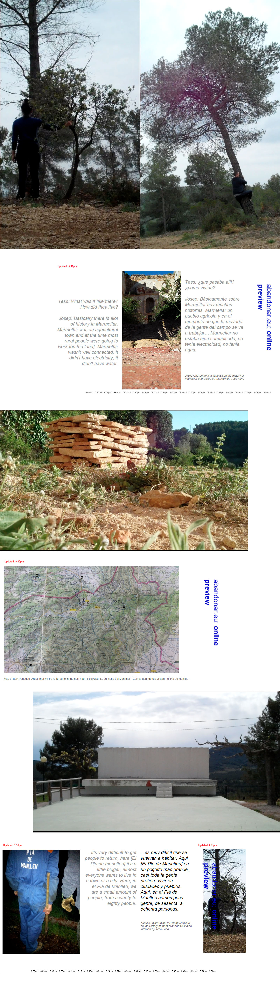

In 2013 Tess Faria and Ben Burtenshaw conducted a research project in the Montmell area of the Baix de Penedes. During this time they collaborated with Cerrca as a main base for conversation and reflection on their project; Abandonar.eu. The body of work developed out of a series of walks to, from and around Marmellar and Selma, two abandoned villages within walking distance of the El Pla de Manlleu. Their stay culminated in a live broadcast of visual art works and texts from their body of research into the history of the villages. The villages functioned as dual points of reference; acting as guidelines within the project and as markers for later return.From the conception of the project Tess and Ben planned for abandonar.eu to facilitate further art works, advancing on this body of research: in March 2014 they will pursue this aim.
BB & Tess Faria, Novemebr 2013
